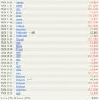

Goldrush beta coming to an end
Friday 27th April, 2007 | Skip to comments (3)
Tomorrow (28th) the Goldrush beta will end.
I must say that it has been a success with over 140 registered users and almost 1000 bets since the opening a month ago. I have recieved a lot of positive comments on both functionality/idea and the website.
| The odds system have sometimes failed a bit but mostly I think the resulting odds have been fair with reasonable payouts. One thing we (qwdrama crew) have been discussing is whether you should be able to bet on several options on the same game or only at one (this is yet undecided). |  |

I have recieved many good feature suggestions and hopefully most of them will be available when Goldrush is re-released.
Here is a list of new features that will be included in Goldrush 1.0:
- Advanced leaderboard and statistics system (individual and general)
- Betmodes for each game (ie, >= 200 frags, first team to 100 etc)
- Comments on bets/games
- Live countdown to expiration for games
- Cancel bets (with small fee)
- Auto-login
We still are interested in more suggestions so please visit #qwdrama and tell us what features you think we should include/change to improve Goldrush.
Anyway, I hope you liked it so far!
The most time on goldrush I've wasted on following thing so I think it should be implemented:
I was comparing a list of my Active bets and a list of Upcoming games to see if there are games I have not betted on yet.
So I'd welcome a feature that would filter my Active bets out of Upcoming games list.